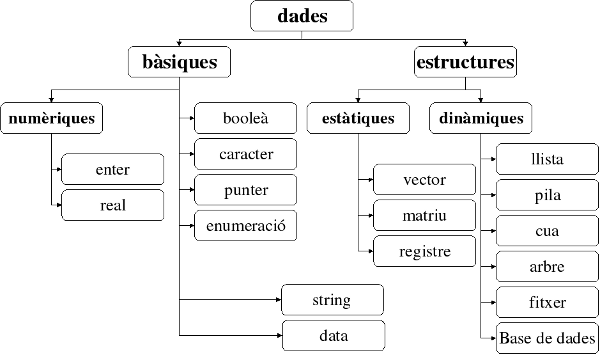

Tipus de dades¶
Com hem vist, el tipus de dada indica el rang de valors vàlid per una variable.
Donat que per l’ordinador, tots els valors finalment es representen igual com a seqüències de 0 i 1, el tipus és qui indica com s’ha d’interpretar aquesta seqüència.
Una imatge que pot ser útil per entendre el concepte de tipus és la de motlle. Si els valors emmagatzemats en memòria formen tot plegat una «massa» de 0 i 1, amb el motlle agafen una forma concreta.
Una classificació, per força incompleta, dels tipus de dades pot ser la següent:
En Python, alguns dels tipus bàsics que més farem servir inicialment són:
int: enterPodem indicar valors literals enters directament com ara
42o-3. Seran interpretats en base 10. Si volem fer servir una altra base, podem fer servir la notació que vam veure a la secció Sistemes de numeració en Python. Per exemple,0xf3aper indicar el valor en hexadecimalF3A.float: realSepararem els decimals amb un punt en comptes d’una coma (sí, Python està en anglès)
Així, seran valors vàlids
3.1415,-2.00001i la notació4e-5que equival a 4 per 10 elevat a -5, o també0.00004str: string (o cadena de text)En Python, els strings han d’anar envoltats o de cometes simples o de cometes dobles.
Els literals següents serien equivalents:
- «Adelita Ros»
- “Adelita Ros”
bool: booleàEls valors de cert o fals, en Python s’escriuen
TrueoFalse.
Podem saber quin tipus de dades considera Python que és un literal, fent servir type(). Per
exemple:
>>> type(42)
<class 'int'>
>>> type('quaranta-dos')
<class 'str'>
>>> type(3.1416)
<class 'float'>
>>> type(True)
<class 'bool'>
Juguem una mica¶
Pràctica 1. Identifica literals¶
Considera novament el següent codi:
1 2 3 4 5 6 7 8 9 10 11 12 13 14 15 16 17 18 | """
turtle_redandblue.py
Demostració de l'ús de Turtle dibuixant dues espirals a l'hora
"""
import turtle
blava = turtle.Pen()
blava.color('blue')
vermella = turtle.Pen() # Una altra tortuga!
vermella.color('red')
vermella.left(45) # La tortuga vermella comença una mica abançada
for passes in range(100):
blava.right(90)
blava.forward(passes)
vermella.left(90)
vermella.forward(passes)
input()
|
Identifica els literals que fa servir i de quin tipus són segons la funció
type().
Pista: n’hi ha sis!
Ref. IP7.2